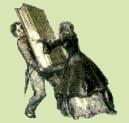

|

Sac. Enrico
Villa
San Matroniano
nella leggenda
e nella storia
Documenti e note critiche
Milano
Basilica dei SS. Apostoli
e Nazaro Maggiore
1942-XX
|
|
APPENDICI
I Visite di S.E. Il Cardinale Ildefonso Schuster agli scavi in corso
nella Basilica degli Apostoli
Una improvvisa visita compiva S.E. Il Cardinale A.I. Schuster, Arcivescovo
di Milano, il pomeriggio del 7 ottobre 1941.
Non inaspettata, poiché da tempo aveva espresso il desiderio di
portarsi a constatare quanto si stava compiendo in san Nazaro.
Lesto, come sempre, volle osservare ogni cosa, chiese informazioni, notizie,
il perchè di taluni lavori; il signor Prevosto lo soddisfece.
Avrebbe voluto scendere nelle umide e strette gallerie praticate nel sottosuolo
della Basilica, ma la tarda ora ed i timori del segretario non lo permisero.
Accomiatandosi disse: tornerò presto, nel frattempo trovatemi il
Corpo di san Matroniano.
Una seconda visita, desiderata, la compì il pomeriggio del 28 ottobre
1841. Erano ad attenderlo in piazza san Nazaro il signor Prevosto ed i
suoi Coadiutori, il prof. Aristide Calderini ed il dott. Alberto De Capitani
d'Arzago, promotori della "Forma urbis mediolani", e una rappresentanza
della Fabbriceria della Basilica.
Una prima sosta avvenne sulla stessa piazza di san Nazaro da tre mesi
sottoposta a sistematici assaggi e scavi con meraviglia e curiosità
dei passanti, i quali sl sentire che si stavano cercando degli autentici
mattoni romani, pensavano ad uno scherzo, però di ottimo gusto
se S.E. Il Cardinale volle pur lui, archeologo per istinto, rimirare mattoni,
porzioni di pavimento a rozzo mosaico, pezzi di intonaci affrescati -
raccolti siccome reliquie - cossi, monete, etc.
Il prof. Calderini illustrò a S.E. Il Cardinale gli avanzi, pochi
in vero, di alcune probabili edicole funerarie.
Nonostante la loro pochezza dovuta al pessimo sottosuolo milanese ed a
diverse precedenti manomissioni rivestono comunque per l'Archeologia Milanese
una importanza notevole.
La seconda sosta e più prolungata si compì agli scavi, eseguiti
dal Comitato Restauri Monumenti di Milano, della ridivenuta nota cappella
di san Lino - già da oggi non più un comune e banale passaggio
- ed a quelli della vicina cappella di san Matroniano.
Il dott. Ferrari mostrò e segnalò a S.E. Il Cardinale la
curiosa pianta centrale della cappella di san Lino; gli affreschi rinvenuti;
le fondamenta e pochi ruderi in rialzato della vetusta cappella ad emiciclo
di san Matroniano, distrutta nel 1653.
L'importanza dei frammenti di queste mura non è indifferente; quando
se ne trovarono le prime tracce, coloro che assistevano all'opera di ritrovamento
erano soddisfatti, nonostante che la fitta e fine polvere coloriva di
un bianco candido gli abiti e la nera veste.
Successivamente Sua Eminenza, accompagnato dal Cavaliere del lavoro gr.
Uff. Ettore Moretti si portava ad ammirare il restauro quasi ultimato
dell'abside che dà su Largo Richini e gli scandagli compiuti all'abside
maggiore posta al capo della croce.
Ad ora tarda si accomiatò non prima di essersi congratulato per
il già fatto ed auspicando per il da farsi, rammentando che la
Basilica Apostolorum è tra gli edifici più significativi
della Milano paleocristiana e non poche sorprese serberà.
Il 6 novembre alla solenne adunanza del Reali Istituto Lombardo di Scienze
e Lettere, l'Em.mo Cardinale Schuster tenne la prolusione per il nuovo
anno 1941-42.
Il tema: "L'attività edilizia di sant'Ambrogio a Milano".
Non mancò il Cardinale di ricordare la Basilica degli Apostoli,
anzi annunciò le conclusioni delle due minuziose visite da lui
compiute agli scavi in corso.
Conclusione o meglio preannuncio di altre conclusioni che torna d'incoraggiamento
e stimolo a persistere nei lavori di studio, di ricerca, di restauro anche
se le difficoltà incontrate non furono poche e non sono tutte.
La certezza di rintracciare la costruzione di Ambrogio, che sino dagli
inizi arrise, non fu vana.
Il testo della prolusione venne integralmente pubblicato il 9 novembre
dal quotidiano cattolico "L'Italia".
Nell'esordio così si espresse: "L'aspetto sotto il quale voglio
presentare oggi sant'Ambrogio, è nuovo solo in parte. Infatti,
se a Milano domandate anche ad un ragazzo per via, chi ha costruito la
imponente mole della basilica ambrosiana, egli vi guarderà dapprima
come sorpreso dell'ingenua domanda, quindi vi risponderà. Sant'Ambroeus.
Però, soltanto le più recenti indagini nel campo dell'Archeologia,
come in quello della Patrologia Cristiana hanno potuto misurare la molteplice
attività edilizia del grande Vescovo, valutandone anche l'importanza
per la storia dell'arte.
In questo campo, dell'Archeologia milanese ancora in parte inesplorato,
le moderne ricerche sono ancora quasi agli inizi. Quella sfinge della
chiesa di san Lorenzo sulla via Ticinese, solo adesso si rassegna a svelarci
i suoi secreti.
Nell'area della Basilica Apostolorum sulla via Romana qualche recente
sondaggio ci ha dimostrato che lì uno studio sistematico del monumento
potrebbe essere coronato da liete sorprese archeologiche, sino magari
a ritrovare, almeno sino ad una certa altezza, le primitive mura della
pianta a croce equilatera della basilica paleocristiana".
Dopo aver descritto a lungo "il nostro bel san Lorenzo" passa
alla Basilica Apostolorum.: "Mentre si stanno ancora ultimando i
restauri della Laurenziana, ecco che la Basilica degli Apostoli sulla
via Romana richiama nuovamente a sé l'attenzione dell'archeologo.
Dietro la maschera della Cappella trivulziana che le nasconde la faccia
e sotto le vesti variopinte con cui l'hanno camuffata, in questi ultimi
quattro secoli, essa cela ancora importanti avanzi della sua costruzione
primitiva. Non siamo ancora in grado di determinare quali e quante parti
dell'ossatura di san Nazaro risalgono ancora a sant'Ambrogio; ma è
già constatato che queste parti originarie con un rozzo "opus
spicatum" ancora esistano, soprattutto della parte dell'abside.
Quella che noi oggi chiamiamo semplicemente san Nazaro, sant'Ambrogio
intitola invece Basilica Romana, dalla via consolare lungo la quale sorgeva.
Precedentemente, quella vasta area era stata adibita ad uso funerario.
Non è più di qualche settimana che sulla piazza che si apre
innanzi alla chiesa, sono riapparsi avanzi di cubicoli mortuari e di sepolcri,
con stucchi dipinti, ornamenti di bronzo, ed altra stipe funeraria".
|
|
|